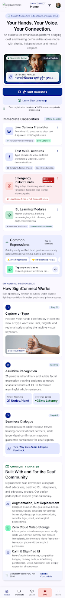
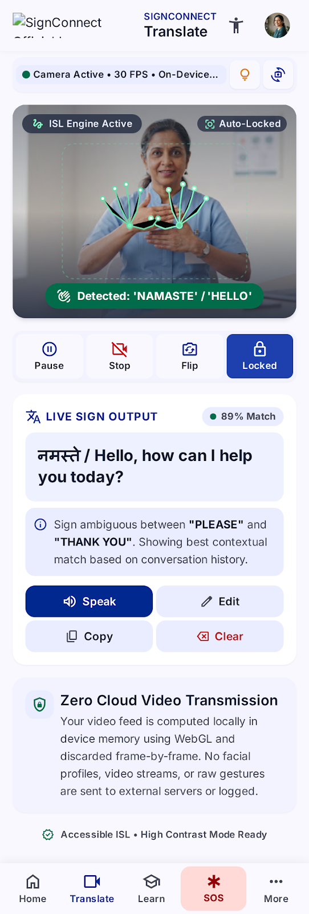
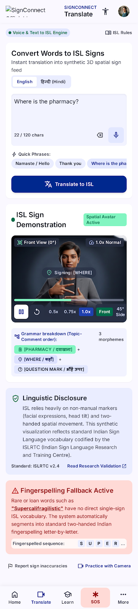
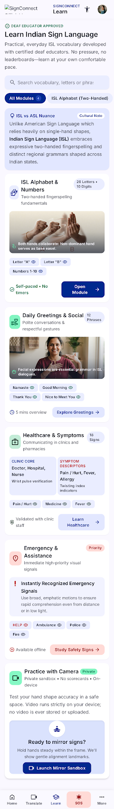
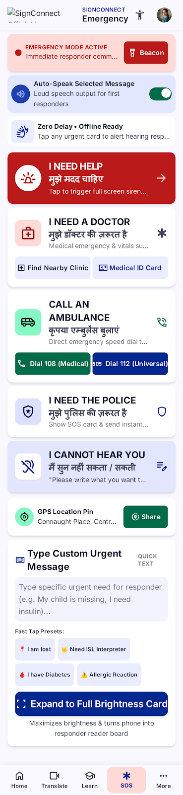
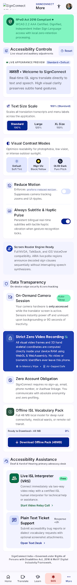

Welcome to the SignConnect Frontend
Every screen exported from your Google Stitch design has been structured into its own clean, modular frontend page directory with dedicated HTML, styles, scripts, screenshot references, and unified navigation.
Frontend Page Directories
Click any card to launch that page directly

Tab 1 • HomeHome Dashboard
Central assistive portal with quick ISL phrases demo, live voice synthesis, and feature navigation.

Live NeuralLive Camera Translator
Real-time ISL 21-point hand landmark tracking, live bilingual transcription, speech synthesis, and camera controls.

3D VisualizerText & Voice to ISL
Speech recognition dictation, animated 3D avatar gestures, multi-speed playback, and ISL syntactic grammar breakdown.

4 ModulesLearn Indian Sign Language
Educational modules for two-handed alphabet, greetings, medical signs, safety vocabulary, and on-device mirror practice.

High Priority SOSEmergency Help Action Cards
Distress action cards, full-screen responder reader boards, strobe attention beacon, 112/108 speed dials, and GPS sharing.

WCAG 2.2 AAAPrivacy & Accessibility
Real-time font scale magnification (100%-150%), high contrast yellow/black modes, OLED dark, zero-cloud data policies, and offline packs.
About Us & Ethical Mission
Pillars of linguistic justice, certified human interpreter advocacy, RPwD Act compliance, research credits, and community feedback forum.